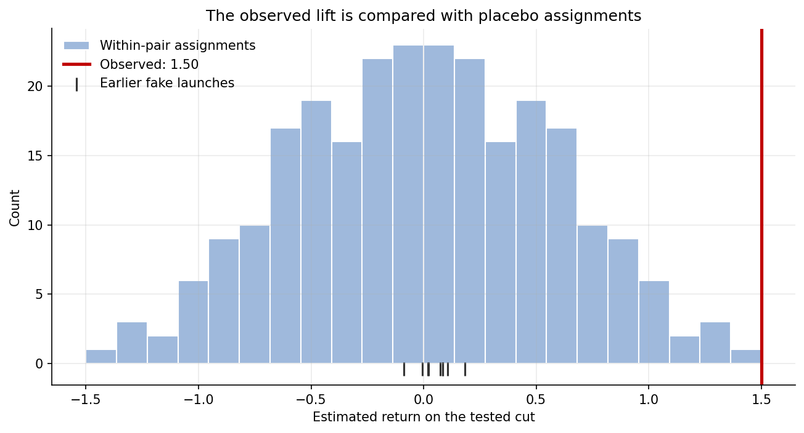

6.3 増分効果実験
日本語版について
このページは英語版 Marketing Science in Python のAI翻訳です。英語版を正本とし、差異がある場合は英語版を優先してください。コード、Notebook、画像内の文字は英語のままです。 英語版を読む
増分効果とは何か？
MMMのオプティマイザーはGoogle Searchを30%、制約の下限まで削減しようとするが、モデルはその移動を裏づけられない。Searchの限界ROAS区間は0.4から9.5まであり、行動に移すには広すぎる。Section 6.2はそこで終わった。理由は履歴にある。Searchは3年間、ほぼ一定の週次予算で常時稼働してきたため、モデルはSearch支出が動くのを一度も見ておらず、推定値の大部分は出発点の事前分布のままである。そのような推定に基づいてチャネルを削減するのは、意思決定ではなく賭けだ。全国で削減する前に、Search支出の最後の30%が実際に何を買っていたのかを知る必要がある。
その数値が増分効果である。増分効果とは、広告がなければ起きなかった成果を指す。キャンペーンが$120,000の売上を記録しても、そのうち$100,000が広告なしでも発生したなら、増分売上は$20,000である。アトリビューションはこの$100,000について何も語らず、MMMは履歴の変動からしか推定できないが、Searchにはその変動がない。この数値を得るには、データを変えなければならない。何がどこで変わるかを制御する実験を行うのである。
実験単位を選ぶ
最初の設計判断は、何を無作為化するかである。ユーザーベースのコンバージョンリフト調査では、対象となる人を無作為化する。プラットフォームがホールドアウト群へのキャンペーン配信を抑止し、コンバージョン率を比較する。地域実験では市場を無作為化する。テスト市場の全員に対してメディアを変更し、その地域で事業が測定する成果を使う。図 1 は両者を並べて示している。

| 設計上の問い | ユーザーベースのリフト | 地域実験 |
|---|---|---|
| 無作為化の単位 | 対象ユーザー | 市場または地域 |
| 通常の運用主体 | 広告プラットフォーム | ブランドとアナリスト |
| 主な成果指標 | 記録されたコンバージョン | 集計された事業KPI |
| 主な強み | 個人単位の無作為化 | オフラインと市場全体のリフト |
| 主な制約 | ID、追跡、ボリューム | 単位数の少なさ、波及、ノイズ |
ユーザーベースのリフトが利用できるなら、通常はこちらの方が設計として明快である。個人単位の無作為化、大きなサンプル、作業を行うコンソールがある。ただし測るのは、プラットフォームが識別できるユーザーのうちの記録されたコンバージョンなので、オフライン売上、他チャネルへの波及、会社帳簿上の売上は範囲外になる。ここでの問いは会社帳簿上の総売上についてであり、意思決定はキャンペーン設定ではなく予算削減である。そのため地域を使う。地域実験は成果を売上システムから読み取り、MMMが使う地域×週の構造へ集計できる。これはSection 6.4で必要になる。ユーザーベースのリフトの仕組みは参考文献と追加資料で扱う。
地域実験の4つのステップ

図 2 は本章の残りの地図である。市場×週の履歴を作り、テストを設計して意思決定ルールを固定し、実行し、信頼できる反実仮想に対するリフトを測ってルールを適用する。次の4つのセクションが、それぞれ1つのステップに対応する。
付属ノートブック： sec6.3_geo_experiment.ipynbは、Section 6.2のモデルとSearchの経済性をそろえた40市場の合成パネルで実験全体を実行する。真値を埋め込んでいるため、以下のすべての推定値を真値と照合できる。
GitHubで見る
ステップ1：履歴データ
以後のすべては1つの表から作られる。市場×週ごとに1行を持ち、売上、Search支出、テスト中に動きうるその他のローカルメディアを含む。ここでのパネルには40市場と、テスト期間前96週間の履歴がある。2年あれば余裕があり、成果の季節性が強くなければ1年でも実施可能である。売上は会社自身のシステムから、メディアを実際に制御できる地域粒度で取得しなければならない。Searchキャンペーンを州単位でしか設定できないなら、州が市場になる。支出は計画値ではなく、実際に変更する支出でなければならない。そして、昨年物流センターができた市場のように履歴に既知のショックがある市場は、何の対照にもならないので、この時点で外す。
ステップ2：テスト前設計
5つの意思決定が調査を定義し、そのすべてを結果が存在する前に行う。
- KPI。 会社帳簿上の売上。CFOの問いが対象とし、MMMがモデル化するものでもある。
- 市場と割り当て。 事前期間の挙動で候補市場を選別し、マッチドペアを作り、各ペア内で無作為化する。
- 支出変更。 テスト市場でSearchを30%削減する。これはオプティマイザーの提案なので、テストは代理指標ではなく検討中の方針そのものを測る。
- 期間と検出力。 履歴パネル上のシミュレーションで選んだ8週間。
- 意思決定ルール。 どの結果がどの行動につながるかを、今の時点で書き下す。
ノートブックでは、これらの選択を1つの設定セルで固定する。
DESIGN = {
"seed": 20260888,
"channel": "Google Search",
"test_start": "2024-02-05",
"test_end": "2024-03-25",
"test_weeks": 8,
"n_pairs": 8,
"spend_multiplier": 0.70, # a 30% pull-back in test markets
"contribution_margin": 0.40, # sets the decision hurdle below
# ...plus `direction`, which records that this test cuts spend so the
# contrast is negative, and the power-simulation grid: durations, spend
# levels, candidate lifts, and the significance level.
}なぜ追加ではなく削減なのか。削減こそが、検討の俎上にある方針だからだ。削減テストは、現在の予算の70%から100%までの支出ブロックのリターンを測る。これはオプティマイザーが取り除こうと提案したブロックそのものである。増額テストなら、その上のブロックを測ることになり、曲線上では別の量になる。本書ではこの測定量を「テストした削減のリターン」と呼び、「限界ROAS」はモデルが示す現在の支出での傾きに限って使う。両者のつながりはSection 6.4で説明する。
市場の選択と割り当て
履歴上の成果だけを使う。ノートブックでは40市場それぞれについて、事業の他地域との相関、規模、トレンドを採点し、有力な16候補を残す。規模の近い市場同士でペアを作り、各ペア内のトレンドの均衡を確認してから、ペアごとにコインを投げてテスト市場を選ぶ。スクリーニングはノイズを減らし、無作為化が比較を因果的にする。成果を見てからテスト市場を選んだり、「これらの市場は典型的だから」と手作業で選んだりすれば、この区別は崩れる。
波及は市場選択の問題であり、後からどの推定器を使っても直せない。通勤者はある市場で買い物をし別の市場に住み、ローカルTVは境界を越え、全国販促はどこでも需要を動かす。メディアを実際に制御できる、重複しない単位を使い、選択市場間で他のローカル活動を安定させる。対照市場が処置の一部を受ければ、どの適合統計にも表れないまま、推定値はゼロ方向へ偏る。
シミュレーションによる検出力とMDE
確定する前に、このパネルで事業が気にする大きさの効果を検出できるかを問う。ノートブックは履歴上の疑似開始日を選び、予定削減によって候補のリターンが失う売上を差し引き、同じクラスタ推定器を再実行し、効果を検出できた回数を数える。これを期間と削減幅を変えて繰り返すと、シミュレーションによる最小検出可能効果、すなわちMDEが得られる。

図 3 では、8週間の30%削減で約0.40以上のリターンを検出でき、4週間なら0.50が必要になる。これらの数値はこのパネル固有である。4〜8週間にわたる20〜50%の支出変更は一般的な出発点であってルールではない。自社の履歴でシミュレーションすることがルールである。
意思決定ルールと設計の固定
MDEは、テストが何をゼロと区別できるかを示す。CFOが問うているのは別のことだ。Searchは予算を維持できるだけ稼いでいるのか。この「十分」には数値がある。限界利益率が\(m\)なら、支出1ドルは売上\(1/m\)を返したときに損益分岐する。利益率40%では、Searchの1ドルは$2.50を持ち帰らなければならない。この閾値は統計ではなく事業の入力であり、決めるのは1つの意思決定だけである。この支出ブロックをそもそもメディア予算に残すべきか、という問いだ。代わりに予算をどこへ移すべきかは5チャネルすべてにまたがる比較であり、その比較はSection 6.4の仕事である。
そこで、開始前にルールを書く。テストした削減のリターンの95%信頼区間がすべて2.50より上なら、予算を維持する。すべて下なら、オプティマイザーの提案どおり削減する。2.50をまたぐなら全国計画を保留し、追試を設計する。結果を見てからこのテストを延長すれば、別のテストになってしまう。リターンが閾値を大きく下回るときは、削減の判定を出す検出力にこの設計は余裕がある。閾値のすぐ下にあるときはほとんどなく、この規模では維持の判定を出す力はない。ノートブックは、p値ではなく判定をシミュレーションし、その3つを意思決定と同じ単位で示す。
| 削減の真のリターン | P(削減) | P(保留) | P(維持) |
|---|---|---|---|
| 1.5 | 0.99 | 0.01 | 0.00 |
| 2.0 | 0.21 | 0.79 | 0.00 |
| 2.5 | 0.00 | 1.00 | 0.00 |
| 3.0 | 0.00 | 1.00 | 0.00 |
ここですべてを固定する。市場リスト、日付、支出計画、推定器、除外するカレンダー期間、閾値、乱数シードである。Black Fridayのような大きなイベントがテスト境界をまたがないようにする。どの選択が望ましい答えを生むかを誰も知らない間が、設計規律を守る最も容易な時点である。
ステップ3：地域テストの実行
ここは、アナリストが行うことは最も少ないが、守るべきことは最も多いステップである。開始日に8つのテスト市場でSearch支出を30%減らし、そのまま維持する。対照市場は通常どおり運用する。それ以外は地域内で何も変えない。市場単位の販促を行わず、穴埋めのため他メディアを増やさず、対照市場で「これも試してみよう」としない。市場・週別に実際に配信された支出を記録する。ステップ4の分母は計画支出ではなく、実験が実際に除いた支出だからである。支出が計画どおり下がらなかった市場も、割り当てどおり分析に残す。ペアを外すのは、成果データの消失など、事前に固定した理由がある場合だけである。そして週次で結果を読まない。8週間のテストを3週目で読めば、偽陽性率が高い、よりノイズの多いテストになる。
ステップ4：テスト後の測定
次は、こちらが計算するかどうかにかかわらず、ステークホルダーが最初に計算する数値である。テスト中のテスト市場の売上と、その直前8週間を比較する。ノートブックでは、この比較によるリターンは0.44となる。テスト市場の売上は下がったが、削減したSearchの1ドルあたり約44セントにすぎず、削減はほぼ無償に見える。広告マネージャーなら誰もがこの主張を聞いたことがあり、たいてい「ならもっと削ろう」と続く。ここでは間違いである。対照市場を含むすべての市場で、テスト期間に向けて売上が増えており、削減の代償の大半を季節が隠していたからだ。これがステップ2で対照市場を選んだ理由である。
推定器は割り当て機構に従う。これはSection 3.3と同じ原則である。マッチドペア内の無作為化が設計であり、ペア差の差法がそれに対応する推定器である。基本的な交互作用は次のとおりである。
model = smf.ols("revenue ~ treat * post", data=analysis).fit(
cov_type="cluster",
cov_kwds={"groups": analysis["pair"]},
)ノートブック版では、treatとpostの主効果を、各市場の固定効果とペアごとの個別テスト期間項に置き換える。これにより、あるペア固有のショックをリフトと読み違えない。treat:post係数は、処置市場×週あたりの増分売上であり、ここではテスト市場がペアに対して売上を失ったため負になる。その合計を実験で削減した支出で割ると、テストした削減のリターンが得られる。分子と分母はともに負で、その比が支出しなかった1ドルあたりの売上減少額である。分母は、この市場、この日付で実験が変更した支出でなければならず、全国のSearch予算ではない。
設計と整合する推定値は1.500、SEは0.257、95% CIは[0.892, 2.109]である。無作為化の単位はペアなので8つのマッチドペアでクラスタ化し、ペアが8つしかないため区間にはt分布を使う。埋め込んだ真値1.500を回収できている。削減したSearchの1ドルは約$1.50の売上を買っていた。前後比較が示唆した値の3倍以上である。
結果は頑健か？
1つの推定器による1つの推定値は主張にすぎない。以下の確認を経て、結果になる。
第一に事前期間である。ノートブックのイベントスタディ図は、各ペアを開始前週で中心化しており、事前期間の差はドリフトせず、ゼロの周りで変動している。ドリフトしていれば、ペアは平行ではなく、DiDがそのドリフトを測ってしまう。
第二に代替の反実仮想である。合成コントロールは8つのテスト市場を集計し、非負かつ合計1となる重みで未処置のドナーを混合し、事前期間の誤差を最小化する。事前期間で密接に適合することが入場条件である。ここでは適合しており（図 4）、合成コントロールの推定値は1.486で、DiDと真値に近い。未処置の情報を異なる方法で圧縮する2つの推定器が一致するのは情報になる。ただし、好みの数値が出るまで手法を平均してよいという意味ではない。

第三にプラセボである。空間内プラセボでは、実際には起きなかった割り当てなら分析が何を報告するかを問う。8ペアでは、各ペア内の役割を入れ替えると\(2^8 = 256\)通りの割り当てがあり、全列挙できるほど少ない。その分布は構造上ゼロを中心とし、256通りのうち観測値1.500以上に極端な推定値を生むのはわずか2通り（図 5）、無作為化p値は0.008である。時間内プラセボでは、同じ8週間のウィンドウを以前の履歴上で移動させる。その平均は0.053で、すべての日付でリフトが繰り返されるのではなく、偽の効果がゼロの両側に現れる。

割り当てが無作為化されているため、プラセボ分布は設計そのものの参照分布である。無作為化されていないマッチドマーケット調査でも同じ確認を行うが、無作為化の言葉を借りてはいけない。その場合、因果的主張は合成反実仮想と、測定されていないショックが選択市場を分けなかったという論拠に依存する。MetaのGeoLiftとGoogleのCausalImpactはその状況向けに作られている。
リフトから意思決定へ
固定したルールを適用する。閾値は2.50で、区間の上限2.109はそれを下回る。ルールは削減を示す。削減した1ドルは$1.50の売上、利益率40%では60セントの利益を買っていたにすぎず、不確実性をどう読んでも、その1ドルが1ドルに戻ることはない。
この意思決定が何に依存しなかったかに注目する。効果は、この設計で出せる限り有意である。256通りのうちプラセボ割り当ては2通り、区間は大きな余裕をもってゼロを除外する。「ROAS 1.5、p値0.01未満」と読んだステークホルダーは、Searchは効いていると受け取るだろうし、その両方とも正しい。それでも予算は削られる。問いは、広告が売上を動かすかどうかでは最初からなかったからだ。問いは、最後の$421,906が自身のコストを賄うだけの売上を動かしたかであり、$1.50の売上は60セントの利益である。「有意だったか」を軸に会議を進めれば、Searchは予算を守る。閾値を軸にすれば、同じ数値が削減を示す。効果を立証したテストでも、支出を正当化できないことがある。
次章へ渡す数値がもう1つある。8ペアではなく16市場でクラスタ化するのは一般的で、そうすると標準誤差は0.257から0.176へ狭まり、区間は[1.126, 1.875]になる。しかしそれは、1回のコイン投げの両半分を独立として扱うことであり、実際には独立ではない。そのため、事前に指定したのはペアでの読みである。どちらの区間も2.50に届かないため判定はいずれにせよ同じだが、ペアの区間は2.50まで0.4以内に迫る。両方の幅をSection 6.4へ渡す。
わかっていることは、精密だが狭い。この市場で、この8週間に行った、この30%削減の効果である。反応曲線上の1点であり、引き継ぎでもその範囲を保つ。
| 証拠フィールド | 固定値 |
|---|---|
| チャネル | Google Search |
| 設計 | 無作為化した8つのマッチドペア |
| 日付 | 2024-02-05から2024-03-25 |
| テスト市場のベースライン支出 | $1,406,355 |
| 削減支出 | $421,906 |
| テストした削減のリターン（30%ブロック） | 1.500 |
| 標準誤差（ペアでクラスタ化、事前指定） | 0.257 |
| 標準誤差（市場でクラスタ化） | 0.176 |
| 95% CI（ペアクラスタt） | [0.892, 2.109] |
| 無作為化p値 | 0.008 |
| テスト市場が全国Search支出に占める割合 | 19.9% |
| 推定対象 | 選択市場で8週間行う30%削減の売上効果 |
証拠は、テストした運用範囲で30%削減を支持する。全国展開は、残り32市場がこの8市場と同じように振る舞うと仮定するため、同じガードレールの下で展開し、実配信支出と売上をこの予測に対して追跡する。解放された予算が他の場所でもっと稼ぐかは、5チャネルすべてを見るモデルへの問いであり、Section 6.4がそれを問う。
重要なポイント
- 増分効果とは、広告がなければ起きなかった成果である。推定器より先に単位と設計を選び、自社の履歴で検出力をシミュレーションし、意思決定ルールを固定する。
- 有意性ではなく事業の閾値に対して決定する。効果を立証したテストでも、支出を正当化できないことがある。ROASだけでなく、推定対象、その不確実性、運用点を引き継ぐ。